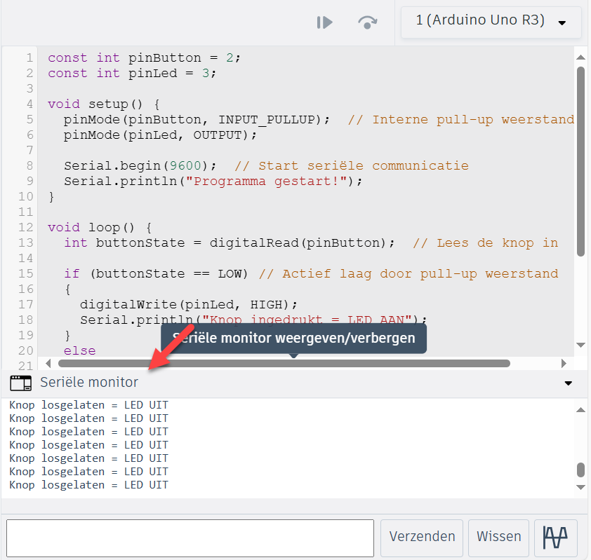
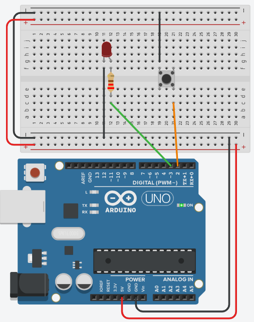

Debuggen
De kans is zeer groot dat je programma niet onmiddellijk foutloos zal werken. Spijtig genoeg is het niet eenvoudig om te zien wat er precies in je programma gebeurt of fout loopt.
Er is geen scherm of debugger zoals op een computer. Daarom gebruik je seriële communicatie om informatie vanuit de microcontroller naar de computer te sturen.
Debuggen met Serial
In onderstaand programma toon je de status van de knop met behulp van de seriële monitor.
const int knopPin = 2;
const int ledPin = 3;
void setup()
{
pinMode(knopPin, INPUT_PULLUP); // Interne pull-up weerstand
pinMode(ledPin, OUTPUT);
Serial.begin(9600); // Start seriële communicatie
Serial.println("Programma gestart!");
}
void loop()
{
int knopStand = digitalRead(knopPin); // Lees de knop in
if (knopStand == LOW) // Actief laag door pull-up weerstand
{
digitalWrite(ledPin, HIGH);
Serial.println("Knop ingedrukt = LED AAN");
}
else
{
digitalWrite(ledPin, LOW);
Serial.println("Knop losgelaten = LED UIT");
}
delay(1000); // Kleine pauze voor leesbaarheid in de seriële monitor
}In TinkerCAD
In TinkerCAD kan je de seriële monitor zichtbaar (of onzichtbaar) maken door op de knop Seriële monitor te klikken.

In Arduino IDE
Rechtsbovenaan kan je de seriële monitor openen (of sluiten). Rechtsonderaan stel je de snelheid in. Zet de regelafsluiting (line separator) op New Line.
De ingestelde snelheid (baudrate) in de seriële monitor moet overeenkomen met de snelheid in je Serial.begin()-instructie. Komen die niet overeen, dan zie je onleesbare tekens.

Schema
